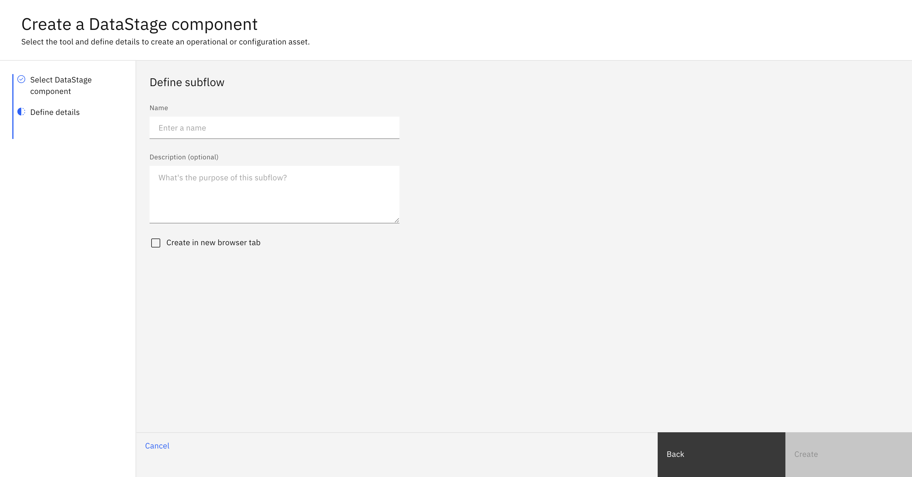
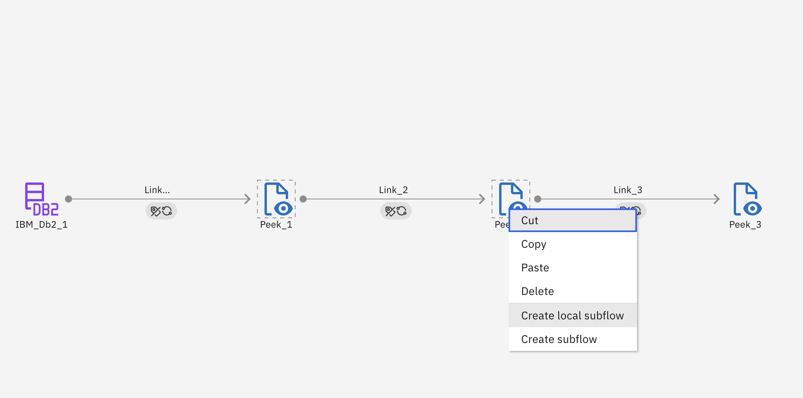
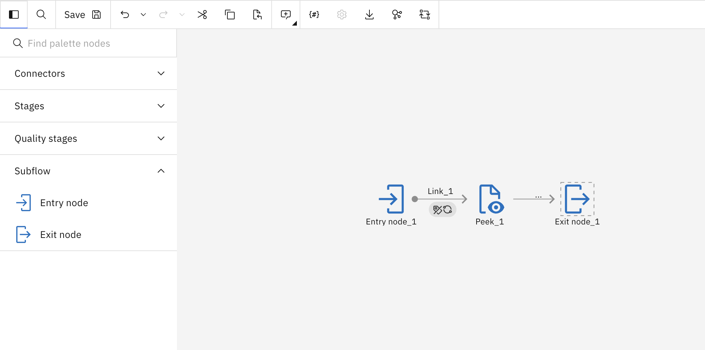
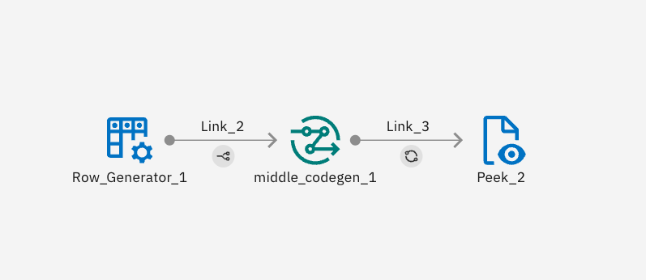
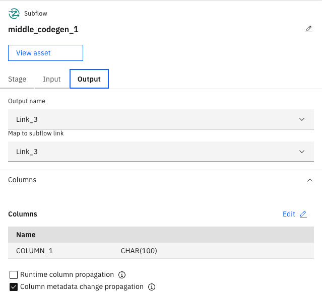

Subflows#
A subflow is a batch flow component that can be used to simplify a complex design visually to make it easier to understand and/or act as a reusable component by other data flows.
- There are two primary types of subflows:
Local Subflow: A subflow that is local to the data flow you are working on. It is not its own asset and cannot be used by other flows.
(Global) Subflow: A subflow that that can be reused by other data flows in the project. It is not local to any specific data flow.
Note
In the documentation, global subflow assets are referred to as ‘subflows’, while local subflows will always be explicitly referred to as ‘local subflows’.
- The SDK provides the following functionality to interact with subflows:
Creating a subflow
Retrieving a subflow
Editing a subflow
Duplicating a subflow
Deconstructing a subflow
Deleting a subflow
Using subflows in flows
Prerequisites#
- To create a subflow using the SDK, please make sure you have done the following steps:
- To create a local subflow using the SDK, please make sure you have done the following steps:
Note
Subflows are a BatchFlow only feature.
Creating a Subflow#
Creating a Subflow#
In the UI, you can create a flow by navigating to Assets -> New asset -> Create reusable DataStage components -> Subflow.
Here, you will be required to choose a name for your subflow along with a name and description.
{kind=link}
In the SDK, you can create a subflow from a Project object using the
Project.create_subflow() method.
You are required to supply a name and an optional description.
This method will return a Subflow instance.
>>> new_subflow = project.create_subflow(name='My first subflow', description='optional description')
>>> new_subflow
Subflow(name='My first flow', description='optional description')
Creating a Local Subflow#
In the UI, you can create a local subflow by highlighting stages in a batch flow and selecting Create local subflow. This creates a local subflow with the nodes you have selected.
{kind=link}
In the SDK, you can create a local subflow from a BatchFlow object using the
BatchFlow.create_subflow() method.
You are required to supply a label and an optional set of nodes to create the subflow from.
This method will return a Subflow instance.
>>> myflow # batch flow already created
BatchFlow(name='My flow', description='')
>>> new_subflow = myflow.create_subflow(label='subflow_stage')
Retrieving Subflows#
Subflows can be retrieved through a Project object using the
Project.subflows property.
You can also retrieve a single subflow using the Project.subflows.get() method
which takes key word arguments and finds the first subflow match.
>>> project.subflows # a list of all the flows
[...Subflow(name='My first subflow', description='optional description')...]
>>> project.subflows.get(name='My first subflow') # get a subflow with the name 'My first subflow'
Subflow(name='My first subflow', description='optional description')
Note
Local subflows cannot be retrieved using this method since they are local to an individual flow rather than a project.
Editing a Subflow#
Editing Attributes#
You can edit a subflow’s attributes like name or description.
>>> new_subflow.description = 'new description for the subflow'
>>> new_subflow
Subflow(name='My first subflow', description='new description for the subflow')
Finally, you can edit a flow by editing its stages. This can include adding a stage, removing a stage, updating a stage’s configuration or connecting a stage in a different way than before. Most of the operations described are covered in Stage documentation.
Unique Stages to Subflows#
- There are two stages that are unique to subflows:
EntryNode: acts as an entry point into the subflowExitNode: acts as an exit point into the subflow
{kind=link}
Subflows cannot be utilized within a parent flow without entry and exit nodes. A subflow has no limit to the amount of entry or exit nodes
it can have. To add an entry or exit node to a subflow, you can use the
Subflow.add_entry_node()
or Subflow.add_exit_node()
method respectively.
>>> new_subflow
Subflow(name='My first subflow', description='optional description', ...)
>>> entry_node = new_subflow.add_entry_node()
>>> exit_node = new_subflow.add_exit_node()
Updating a Subflow#
Updating a Subflow#
In the UI, you can update a flow by making changes to the subflow and hitting the ‘Save’ icon to update the flow.
{kind=link}
In the SDK, you can make any changes to a Subflow instance
in memory and update it by passing this object to Project.update_subflow() method.
Updating a Local Subflow#
In the UI, you can update a local subflow by making changes to the subflow and saving the parent flow. For more information on this, please refer to Updating a Flow.
Duplicating a Subflow#
Duplicating a Subflow#
To duplicate a subflow using the SDK, you need to pass a Subflow instance
to the Project.duplicate_subflow() method
along with the name parameter for the name of the new flow and an optional description parameter.
This will duplicate a flow and return a new instance of Subflow.
>> duplicated_subflow = project.duplicate_subflow(new_subflow, name='duplicated_subflow', description='optional_description')
>> duplicated_subflow
Subflow(name='duplicated_subflow', description='optional_description', ...)
Duplicating a Local Subflow#
To duplicate a local subflow, you need to pass a Subflow instance
to the BatchFlow.duplicate_subflow() method
along with the name parameter.
>> duplicated_subflow = flow.duplicate_subflow(new_subflow, name='duplicated_subflow')
>> duplicated_subflow
Subflow(name='duplicated_subflow', description='', ...)
Deleting a Subflow#
Deleting a Subflow#
To delete a subflow in the UI, you can go to Assets, choose a flow and click on the three dots next to it and choose Delete.
{kind=link}
To delete a flow via the SDK, you need to pass a Subflow instance
to the Project.delete_subflow() method.
This method returns an HTTP response indicating the status of the update operation.
>>> project.delete_subflow(duplicated_subflow)
<Response [204]>
Deleting a Local Subflow#
To delete a local subflow from a flow in the SDK, you need to pass a Subflow instance
to the BatchFlow.delete_subflow() method.
This method returns None if there were no issues.
Using Subflows in Flows#
To use a subflow in a parent data flow, it must be properly linked, which involves mapping its inputs and outputs. Consider the following subflow:

Pay special attention to the name of the links, because when we use this subflow in a parent flow, we need to indicate to the parent node what links to map to. The following data flow uses this subflow:
{kind=link}
To indicate that the input row generator is connected to the entry node Link_2, you must indicate that in the input mapping.

You must also do this for the outputs.
{kind=link}
In the SDK, to link a stage from the parent flow to a subflow’s entry node, you must use the
Link.map_to_link() method,
specifying which link the parent flow should map to.
The following code shows how to create the above subflow and flow:
from ibm_watsonx_data_integration.services.datastage import *
from ibm_watsonx_data_integration.common.auth import IAMAuthenticator
from ibm_watsonx_data_integration import *
api_key = '<TODO: insert your api_key>' # pragma: allowlist secret
auth = IAMAuthenticator(api_key=api_key, base_auth_url='https://cloud.ibm.com') # pragma: allowlist secret
platform = Platform(auth, base_api_url='https://api.ca-tor.dai.cloud.ibm.com')
project = platform.projects.get(project_id='<TODO: insert your project_id>')
flow = project.create_flow(name='subflow_middle_codegen', environment=None, flow_type='batch')
# Stages
row_generator_1 = flow.add_stage('Row Generator', 'Row_Generator_1')
def get_middle_codegen():
sf = project.create_subflow('middle_codegen')
# Stages
entry_node_2 = sf.add_entry_node('Entry node_2')
peek_1 = sf.add_stage('Peek', 'Peek_1')
peek_1.configuration.runtime_column_propagation = False
exit_node_2 = sf.add_exit_node('Exit node_2')
# Graph
link_2_2 = entry_node_2.connect_output_to(peek_1)
link_2_2.name = 'Link_2'
entry_node_2_schema = link_2_2.create_schema()
entry_node_2_schema.add_field('CHAR', 'COLUMN_1').length(100)
link_3_2 = peek_1.connect_output_to(exit_node_2)
link_3_2.name = 'Link_3'
peek_1_schema = link_3_2.create_schema()
peek_1_schema.add_field('CHAR', 'COLUMN_1').source('Link_2.COLUMN_1').length(100)
project.update_subflow(sf)
return sf
middle_codegen = flow.add_subflow(get_middle_codegen(), 'middle_codegen_1')
peek_2 = flow.add_stage('Peek', 'Peek_2')
# Graph
link_2 = row_generator_1.connect_output_to(middle_codegen).map_to_link('Link_2')
link_2.name = 'Link_2'
row_generator_1_schema = link_2.create_schema()
row_generator_1_schema.add_field('CHAR', 'COLUMN_1').length(100)
link_3 = middle_codegen.connect_output_to(peek_2).map_from_link('Link_3')
link_3.name = 'Link_3'
middle_codegen_1_schema = link_3.create_schema()
middle_codegen_1_schema.add_field('CHAR', 'COLUMN_1').source('Link_2.COLUMN_1').length(100)
project.update_flow(flow)
Using Parameter Sets in Subflows#
This section covers the use of parameter sets in external subflows. Local subflows use the parameter sets and local parameters of their parent.
Using Parameter Sets#
The process of using parameter sets in subflows is the exact same as using one in a flow. This process is explained in the Parameter Sets section. In order for a subflow to use a parameter set its parent must also use the parameter set.
Using Local Parameters#
The process of using local parameters in subflows requires a few extra steps compared to how they are used in flows. To add a local parameter, use Subflow.add_local_parameter.
Just like in a flow this method requires a parameter_type and a name. Optionally, a value and description can be provided. Value can either be a string or an int depending on the parameter_type. This method should be called during the process of creating the subflow.
def get_created_subflow():
sf = project.create_subflow('paramset_subflow')
# Stages
entry_node_2 = sf.add_entry_node('Entry node_2')
peek_1 = sf.add_stage('Peek', 'Peek_1')
peek_1.configuration.runtime_column_propagation = False
exit_node_2 = sf.add_exit_node('Exit node_2')
# Graph
link_2_2 = entry_node_2.connect_output_to(peek_1)
link_2_2.name = 'Link_2'
entry_node_2_schema = link_2_2.create_schema()
entry_node_2_schema.add_field('CHAR', 'COLUMN_1').length(100)
link_3_2 = peek_1.connect_output_to(exit_node_2)
link_3_2.name = 'Link_3'
peek_1_schema = link_3_2.create_schema()
peek_1_schema.add_field('CHAR', 'COLUMN_1').source('Link_2.COLUMN_1').length(100)
subflow.add_local_parameter(parameter_type='string', name='make', value='toyota', description='')
subflow.add_local_parameter('integer', 'num', 13)
project.update_subflow(sf)
return sf
Since an external subflow can be reused you may want to set different values for different cases. To do this call the Subflow.set_local_parameter method after adding the subflow to a flow.
This method takes the name of the local parameter you want to change and the value you want to set it to.
paramset_subflow = flow.add_subflow(get_created_subflow(), 'paramset_subflow')
paramset_subflow.set_local_parameter(name='num', value=25)
paramset_subflow.set_local_parameter(name='make', value='honda')
paramset_subflow2 = flow.add_subflow(get_created_subflow(), 'paramset_subflow2')
paramset_subflow.set_local_parameter(name='num', value=36)